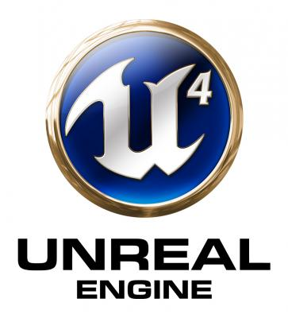
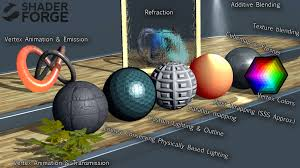
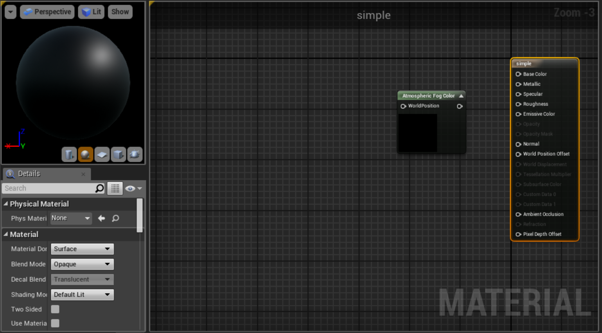
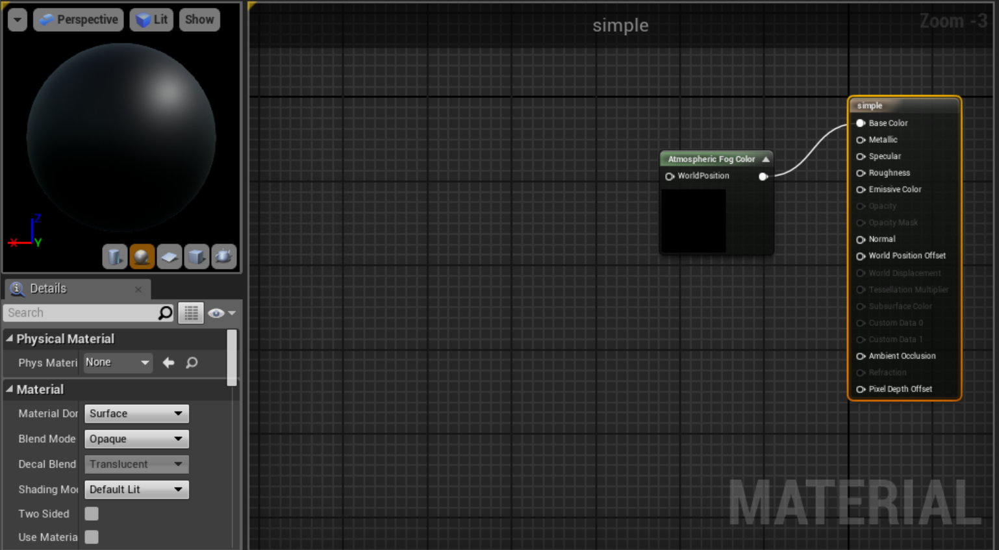
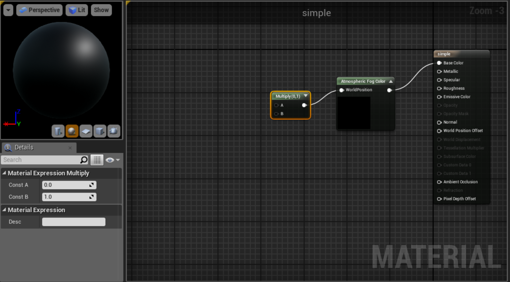
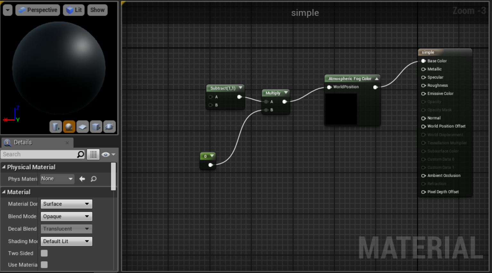
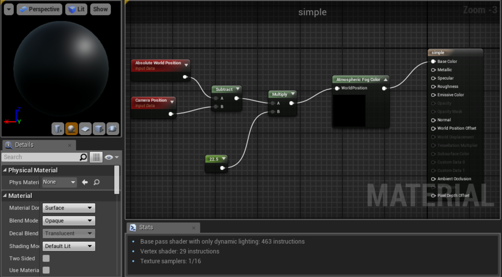
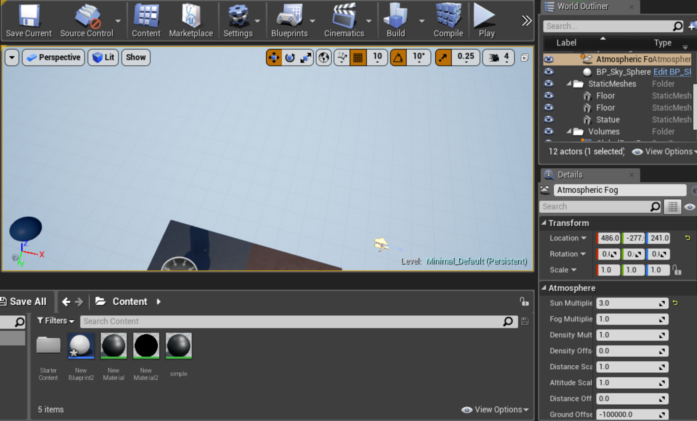
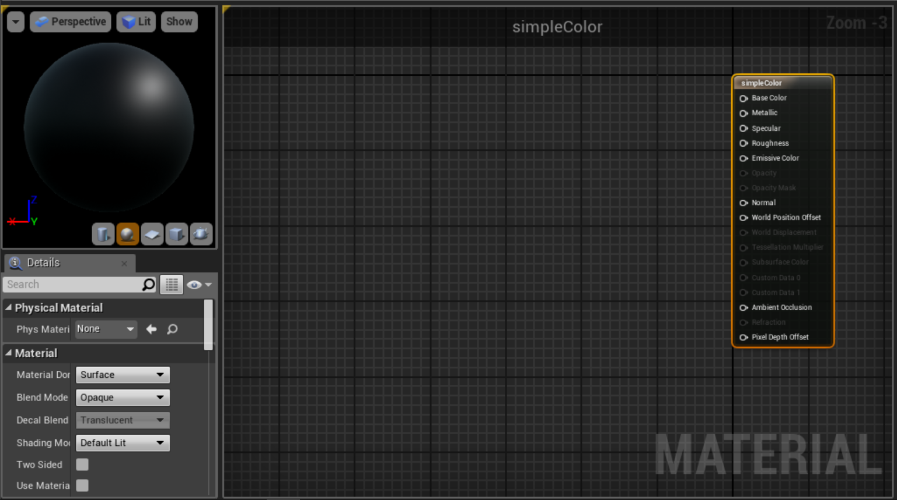
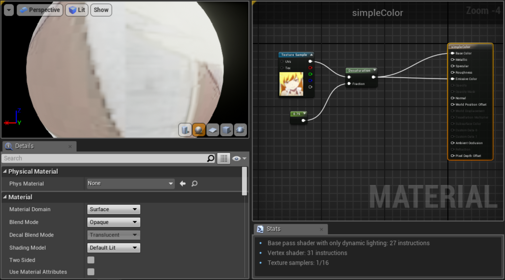

class: center, middle 独りUE4Shader研究  --- <h1> 唐突だが、Shader書きたい！ </h1>  ### ということで、僕（オギ）は、今後UE4yochiで、UE4のshaderの研究をします。 --- # MaterialEditorYochi ## トピック 1. 参考資料 1. MaterialEditorPalette研究 --- # 今回の参考資料 * [Material Expression Reference](https://docs.unrealengine.com/latest/INT/Engine/Rendering/Materials/ExpressionReference/index.html) --- ## MaterialEditorのPaletteの一覧(UE4.14.0) |En|Ja| |:-------------------------|:-----------| | Atmosphere | 雰囲気 | | Blends | ブレンド | | Color | 色 | | Constants | 定数 | | Coordinates | 座標 | | Cubemaps | キューブマップ | | Custom | カスタム | | Debug | デバッグ | | Foliage | 葉 | | Font | フォント | | Functions | 機能 | | Get Post Precess Setting | ポスト・プリセス設定を取得する | | Gradient | 勾配 | | Image Adjustment | 画像調整 | | Landscape | 風景 | --- |En|Ja| |:-------------------------|:-----------| | Lighting | 照明 | | Material Attributes | マテリアルアトリビュート | | Material Layer Blend | マテリアルレイヤブレンド | | Math | 数学 | | MAXScripts | MAXScripts | | Misc | その他 | | Opacity | 不透明度 | | Parameters | パラメーター | | Particles | パーティクル | | Procedurals | 手続き | | Reflecctions | リフレクション | | Shading | シェーディング | | Speed Tree | スピードツリー | | Texture | テクスチャ | | Texturing | テクスチャリング | | Uncategorized | 未分類 | | Utils | Utils | | Vector Ops | ベクトル操作 | | Vectors | ベクトル | | VFX | VFX | | World Postion Offset | 世界の位置オフセット | --- ## Atmosphere Expressions [リファレンス](https://docs.unrealengine.com/latest/INT/Engine/Rendering/Materials/ExpressionReference/Atmosphere/) --- ### 初期状態  --- ### atomsphereForColor追加  --- ### multiply追加  --- ### Sbtract_Constant追加  --- ### WorldPositionとCameraPosition追加  <em>AbsoluteWorldPostion</em>は<b>WorldPosition</b>で検索すれば出てくる. --- ### LevelSettingの追加  カメラの位置で、物体の色が変化する(Fogが変化) --- # 実装！！！！！！！ --- ## Color [リファレンス](https://docs.unrealengine.com/latest/INT/Engine/Rendering/Materials/ExpressionReference/Color/index.html) --- ### 初期状態  --- ### TextureSmapleとConstentとDesaturation追加  --- # 実装！！！！！！！ --- 二つわせてさらに実装! # 実装！！！！！！！ ---